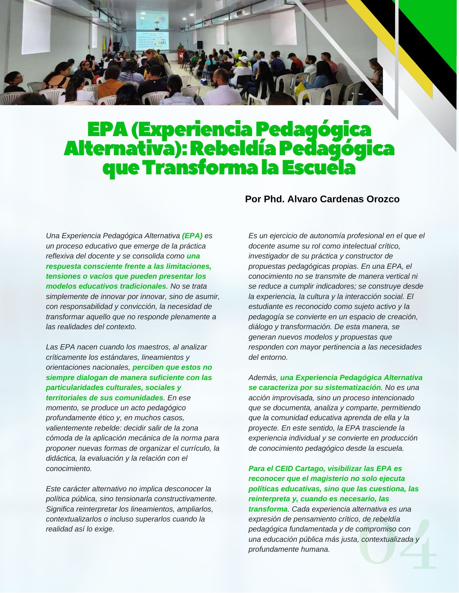

EPA (experiencia pedagógica alternativa): rebeldía pedagógica que transforma la escuela
Qué es una experiencia pedagógica alternativa y cómo transforma la práctica educativa mediante innovación crítica, contextualización territorial y construcción colectiva del conocimiento.
PDF · 1 pág. · 183 KBUna Experiencia Pedagógica Alternativa (EPA) es un proceso educativo que emerge de la práctica reflexiva del docente y se consolida como una respuesta consciente frente a las limitaciones, tensiones o vacíos que pueden presentar los modelos educativos tradicionales. No se trata simplemente de innovar por innovar, sino de asumir, con responsabilidad y convicción, la necesidad de transformar aquello que no responde plenamente a las realidades del contexto.
Las EPA nacen cuando los maestros, al analizar críticamente los estándares, lineamientos y orientaciones nacionales, perciben que estos no siempre dialogan de manera suficiente con las particularidades culturales, sociales y territoriales de sus comunidades. En ese momento, se produce un acto pedagógico profundamente ético y, en muchos casos, valientemente rebelde: decidir salir de la zona cómoda de la aplicación mecánica de la norma para proponer nuevas formas de organizar el currículo, la didáctica, la evaluación y la relación con el conocimiento.
Este carácter alternativo no implica desconocer la política pública, sino tensionarla constructivamente. Significa reinterpretar los lineamientos, ampliarlos, contextualizarlos o incluso superarlos cuando la realidad así lo exige.
Es un ejercicio de autonomía profesional en el que el docente asume su rol como intelectual crítico, investigador de su práctica y constructor de propuestas pedagógicas propias. En una EPA, el conocimiento no se transmite de manera vertical ni se reduce a cumplir indicadores; se construye desde la experiencia, la cultura y la interacción social. El estudiante es reconocido como sujeto activo y la pedagogía se convierte en un espacio de creación, diálogo y transformación. De esta manera, se generan nuevos modelos y propuestas que responden con mayor pertinencia a las necesidades del entorno.
Además, una Experiencia Pedagógica Alternativa se caracteriza por su sistematización. No es una acción improvisada, sino un proceso intencionado que se documenta, analiza y comparte, permitiendo que la comunidad educativa aprenda de ella y la proyecte. En este sentido, la EPA trasciende la experiencia individual y se convierte en producción de conocimiento pedagógico desde la escuela.
Para el CEID Cartago, visibilizar las EPA es reconocer que el magisterio no solo ejecuta políticas educativas, sino que las cuestiona, las reinterpreta y, cuando es necesario, las transforma. Cada experiencia alternativa es una expresión de pensamiento crítico, de rebeldía pedagógica fundamentada y de compromiso con una educación pública más justa, contextualizada y profundamente humana.
Así se ve en la revista
1 página